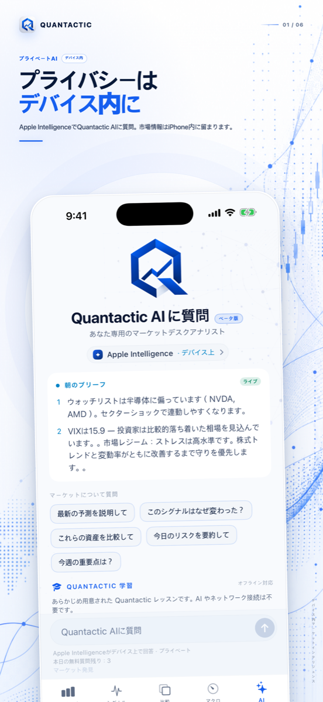
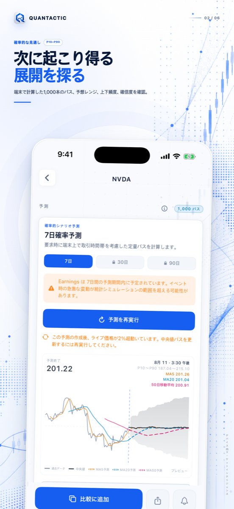
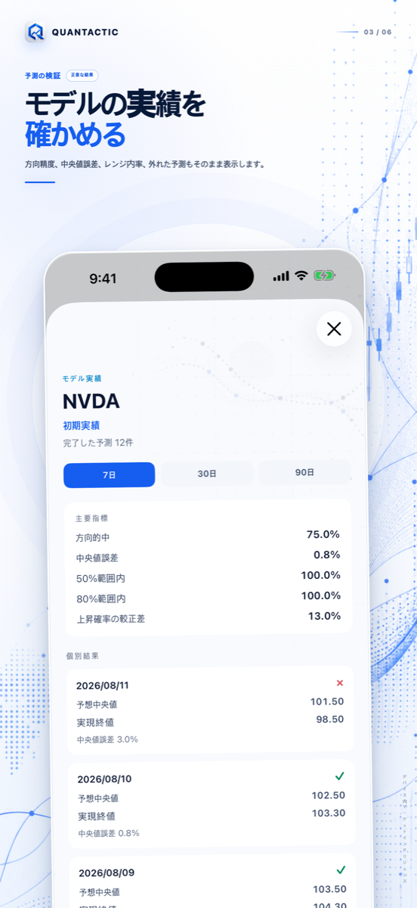
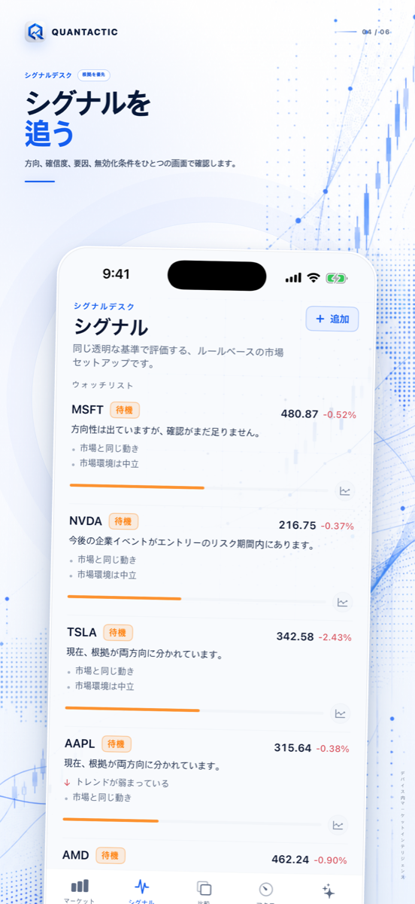
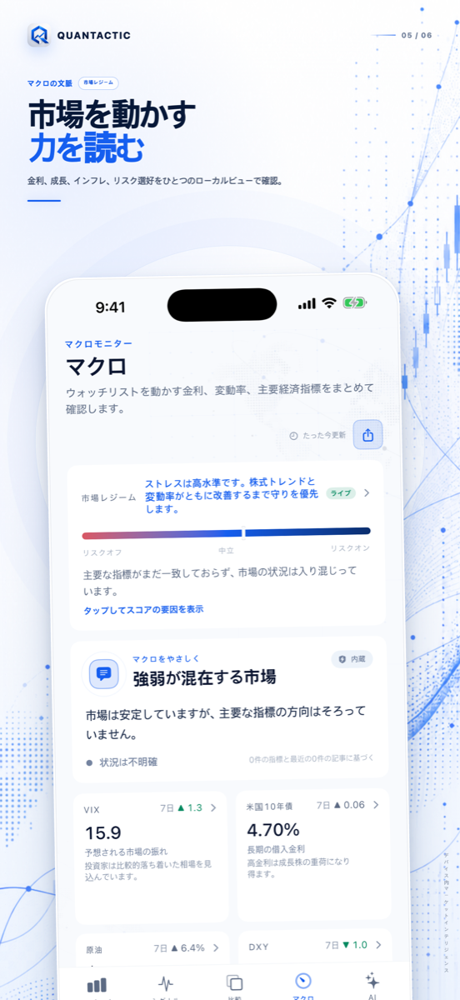
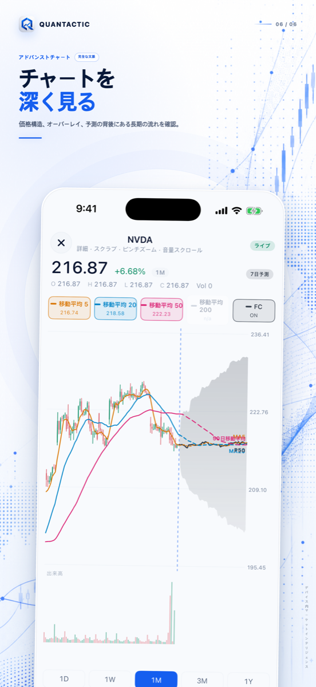

QUANTACTIC 1.3 · プライバシー重視
市場を、明快に見る。
根拠を、手元に残す。
オンデバイスAI、説明可能なシグナル、確率ベースの予測、マクロの文脈、美しい共有カードを一つにまとめたiPhoneのためのプライベート市場デスクです。
iPhone · iOS 26以降 · アカウント・証券口座接続不要

予言ではなく確率
レンジを探り、モデルを検証する。
7日・30日・90日のシナリオを確認し、完了した予測を実際の結果と比較。方向精度、誤差、レンジ内率、個別の外れを表示します。



根拠を示すシグナル
何が支え、何が崩すのかを知る。
方向、確信度、測定要因、リスク、無効化条件を一緒に表示。ブラックボックスや根拠のない材料は使いません。
一つのリサーチデスク
マクロとチャートを、ノイズなく深く。
金利、ボラティリティ、原油、ドル、経済イベント、ローソク足、出来高、移動平均、支持・抵抗、予測レイヤーを確認できます。


QUANTACTIC PRO
より深く。リワード広告なし。
7日予測を無制限に利用し、30日・90日の完全なシナリオ、深いモデル根拠、拡張AI、より高い上限を解放します。
完全な予測
7日予測無制限と30日・90日の完全な確率レンジ。
モデルの説明責任
方向、誤差、レンジ内率、個別結果を追跡。
深い根拠
シグナル、リスク、無効化条件の詳細。
プライベートAI
対応端末でより多くの市場質問を利用。
無料ユーザーは1日1回の7日予測を利用できます。追加実行は、リワード広告を見るかProへ移行するかを明示的に選択。画面移動中に広告は表示されません。
約33%お得 · 継続利用に最適
ダウンロード前に、明快な答えを。
取引を実行しますか？
いいえ。証券口座接続、取引執行、入金、資産管理は行いません。
予測は保証されますか？
いいえ。確率ベースのシナリオであり、目標価格、取引指示、保証ではありません。
何がiPhoneに残りますか？
ウォッチリスト、設定、予測記録、対応する会話はポリシー記載のとおりローカル保存。市場データ、ニュース、購入、広告には通信が必要です。
広告はいつ表示されますか？
無料の日次予測を使い切り、追加実行のためリワード広告を明示的に選んだ場合のみです。画面移動広告はありません。